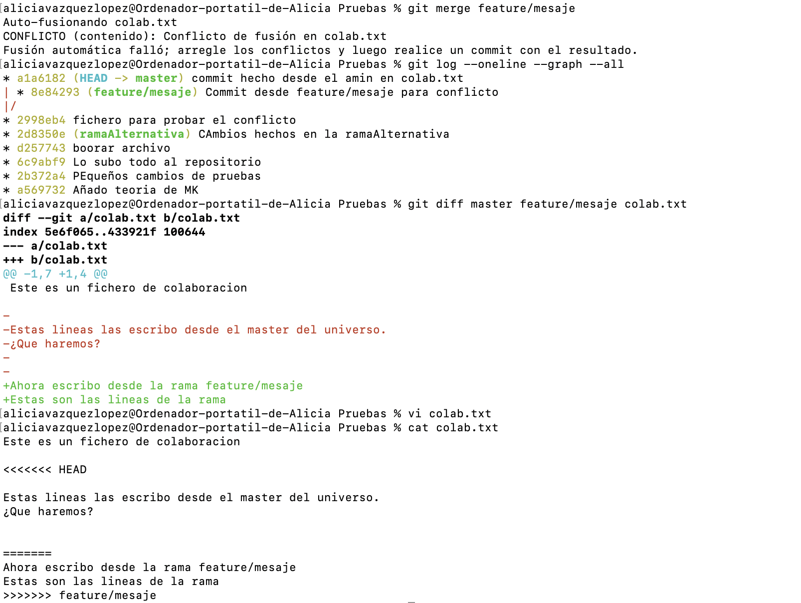

Una tarea, una rama
Cada mejora o corrección se desarrolla en una rama con un objetivo claro: feature/menu o bugfix/login.
4 · Colaboración
Las ramas permiten que varias personas trabajen en paralelo. Los conflictos y las Pull Requests ayudan a integrar esos cambios de forma consciente y revisable.
Si dos personas modifican directamente la misma versión del proyecto, es fácil sobrescribir cambios sin querer. El flujo profesional separa el trabajo en ramas y revisa la integración antes de que llegue a la versión principal.
Cada mejora o corrección se desarrolla en una rama con un objetivo claro: feature/menu o bugfix/login.
Un historial comprensible permite revisar qué se ha hecho, detectar errores y entender la intención de cada cambio.
Antes de fusionar, comprobamos que los cambios encajan con el trabajo de las demás personas y no rompen el proyecto.
Un conflicto aparece cuando Git no puede decidir automáticamente qué contenido conservar. Suele ocurrir si dos ramas han modificado las mismas líneas de un archivo. No es un error de Git: es una decisión que debe tomar una persona.
Antes de resolver
Lee el mensaje de Git y ejecuta git status. Te indicará qué archivos están “both modified” o en conflicto. No hagas un commit hasta haber revisado cada archivo afectado.
git statusgit merge --abortgit merge --abort cancela el merge en curso y devuelve el repositorio al estado anterior al intento de fusión. Úsalo si necesitas parar y entender qué está ocurriendo.
Las marcas de un conflicto
Git marca en el archivo las dos versiones para que puedas compararlas. No deben quedar estas marcas en el archivo final.
<<<<<<< HEAD
Texto de la rama en la que estás
=======
Texto de la rama que intentas integrar
>>>>>>> feature/mensajeEs el contenido de la rama actual, es decir, de la rama destino donde ejecutaste git merge.
Es el contenido que llega desde la rama indicada en el comando git merge nombre-rama.
Resolución
Edita el archivo y conserva una versión coherente: la de HEAD, la de la otra rama o una combinación de ambas. Elimina siempre las tres marcas <<<<<<<, ======= y >>>>>>>.
Cuando el archivo ya contiene la versión que hemos decidido, Git necesita que confirmemos que el conflicto está resuelto. El orden es siempre el mismo:
Abre los archivos marcados y deja su contenido final sin marcas de conflicto.
Añade cada archivo resuelto al staging. Eso informa a Git de que ya no está en conflicto.
git add nombre-archivoCrea el commit que completa la fusión. Puedes aceptar el mensaje que propone Git o escribir uno descriptivo.
git commitgit statusgit log --oneline --graph --allPráctica local y segura
Haz esta prueba en el repositorio donde trabajas con Git. Usaremos un archivo nuevo para no alterar perfil.md. Todavía no necesitas GitHub.
colaboracion.txt con el texto Versión inicial. Guárdalo, añádelo y confirma el cambio:git add colaboracion.txtgit commit -m "docs: crea archivo para practicar conflictos"Cambio desde feature:git switch -c feature/mensajegit add colaboracion.txtgit commit -m "docs: cambia mensaje desde feature"Cambio desde main. Confírmalo:git switch maingit add colaboracion.txtgit commit -m "docs: cambia mensaje desde main"git merge feature/mensaje. Git debería detenerse e indicar un conflicto.
git status, abre colaboracion.txt y sustituye todo el bloque de marcas por una única línea: Mensaje integrado desde main y feature.git add colaboracion.txtgit commit -m "docs: resuelve conflicto de colaboración"git log --oneline --graph --all. Después puedes eliminar la rama: git branch -d feature/mensaje.